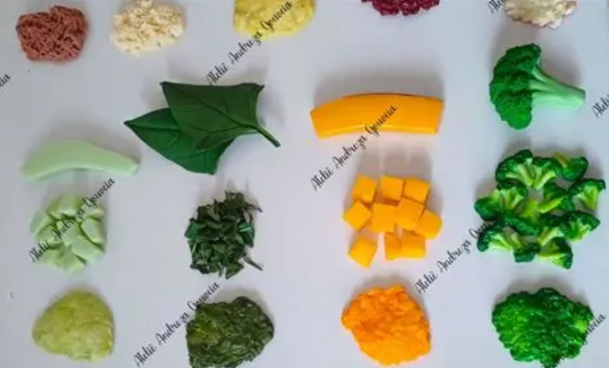
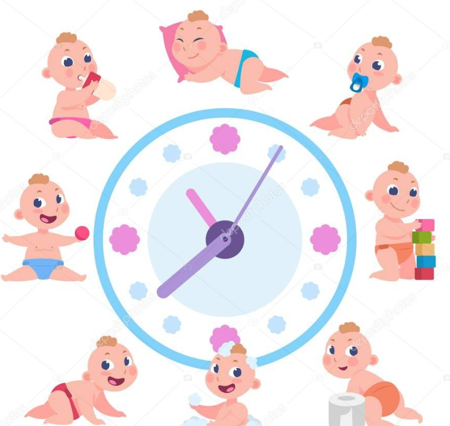

Come y Crece
Menú
Iniciar sesión
Quién soy
Productos
Contacto
Consejos y recetas saludables de 6 meses a 2 años
Empezamos con las frutas
Seguir leyendo

Introducción de nuevas texturas
Seguir leyendo

Rutina de comidas saludable
Seguir leyendo
Introducción de verduras
Seguir leyendo
Introducción de cereales
Seguir leyendo
Snacks y meriendas saludables
Seguir leyendo
Leer menos